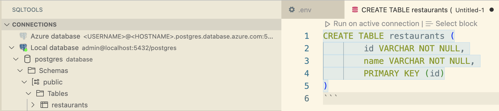
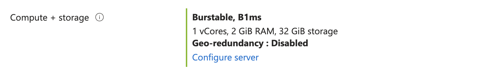
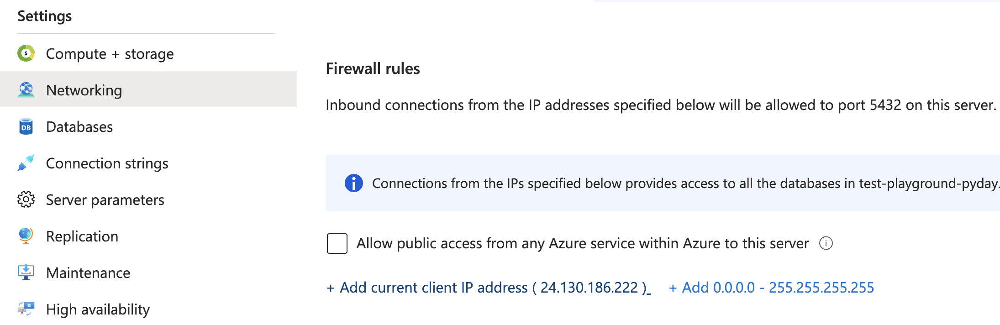
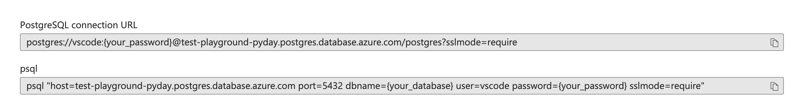
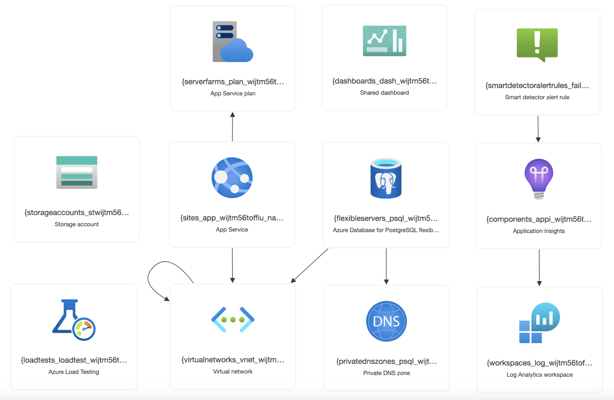

Cloud Databases for Web Apps with Django
- Press O or Escape for overview mode.
- Visit this link for a nice printable version
- Press the copy icon on the upper right of code blocks to copy the code
Today's topics

- Databases
- Databases in Python
- Databases on Azure
- Django
- Django apps on Azure
Intro to Databases
When do we need databases?
Use a database to store any data that needs to be shared across multiple users/computers.

Types of databases
Non-relational / document databases:
MongoDB, Firebase, CouchDB, etc.
Relational databases:
MySQL, SQLite, PostgreSQL, etc.
🙋🏽♀️ What have you used? Tell us in the chat!
Relational database structure
A database contains tables.
Each table has columns and rows.
Example table called restaurants:
| id | name | address |
|---|---|---|
| 1 | Zomsa | 10558 San Pablo Ave |
| 2 | Udupi Palace | 1903 University Ave |
| 3 | Easy Creole | 1761 Alcatraz Ave |
Related tables
restaurants:| id | name | address |
|---|---|---|
| 1 | Zomsa | 10558 San Pablo Ave |
| 2 | Udupi Palace | 1903 University Ave |
| 3 | Easy Creole | 1761 Alcatraz Ave |
reviews:
| id | restaurant_id | text |
|---|---|---|
| 1 | 3 | so yummy! |
| 2 | 3 | scrumdiddlyumptious! |
Tables can be related to each other using foreign keys.
PostgreSQL
PostgreSQL is a popular open-source relational database that has a strong community and extension ecosystem.
It's free and can be installed on your computer.
It's also available as a service on Azure.
📺 Check out the CitusCon talks about PostgreSQL!
youtube.com/hashtag/cituscon
PostgreSQL in VS Code
Follow along with me!
Open this project:
github.com/pamelafox/postgresql-playground
aka.ms/postgres-playground
Using either:

- GitHub Codespaces ➡️ ➡️ ➡️
- VS Code with Dev Containers extension
Dockerfile
ARG IMAGE=python:3
FROM --platform=amd64 mcr.microsoft.com/devcontainers/${IMAGE}
RUN apt-get update && export DEBIAN_FRONTEND=noninteractive \
&& apt-get -y install --no-install-recommends postgresql-client \
&& apt-get clean -y && rm -rf /var/lib/apt/lists/*
🔗 Using container image from MCR devcontainer Python images
👁️ See full file: Dockerfile
Docker-compose.yaml
👁️ See full file: docker-compose.yaml
devcontainer.json: Top level config
Configuration needed to work with the Docker files:
...
"dockerComposeFile": "docker-compose.yml",
"service": "app",
"workspaceFolder": "/workspace",
"forwardPorts": [8000, 5432],
"portsAttributes": {
"8000": {"label": "Django port", "onAutoForward": "notify"},
"5432": {"label": "PostgreSQL port", "onAutoForward": "silent"}
},
...
👁️ See full file: devcontainer.json
devcontainer.json: VS Code extensions
Installing extensions:
...
"extensions": [
"ms-python.python",
"ms-python.vscode-pylance",
"charliermarsh.ruff",
"mtxr.sqltools",
"mtxr.sqltools-driver-pg",
]
...
👁️ See full file: devcontainer.json
devcontainer.json: VS Code settings
Configuring SQLTools extension:
...
"sqltools.connections": [
{
"name": "Local database",
"driver": "PostgreSQL",
"server": "localhost",
"port": 5432,
"database": "postgres",
"username": "admin",
"password": "LocalPasswordOnly"
}
...
👁️ See full file: devcontainer.json
SQLTools extension
Explore SQL tables and run SQL statements:
Connect to local or cloud databases.
PostgreSQL in Python
Accessing PostgreSQL from Python: SQL
Web apps need to be able to access and modify data in databases.
One option is to use SQL directly in the web app code.
import psycopg2
conn = psycopg2.connect("dbname=example")
cur = conn.cursor()
cur.execute("INSERT INTO restaurants (id, name) VALUES ('1', 'test')")
conn.commit()
cur.close()
⚠️ Executing raw SQL queries makes your app vulnerable to SQL injection attacks. See: xkcd.com/327
Accessing DBs from Web Apps: ORM
A better approach is to use an ORM (Object-Relational Mapper) to interact with the database. An ORM represents table rows as Python objects, and provides methods for querying and modifying data.
A SQLAlchemy example:
class Restaurant(Base):
__tablename__ = "restaurants"
id: Mapped[int] = mapped_column(primary_key=True)
name: Mapped[str] = mapped_column()
query = select(Restaurant).where(Restaurant.name == "Zomsa")
results = session.execute(query)
Hosting PostgreSQL
on Azure!

Managed services for PostgreSQL on Azure
| Option | Description |
|---|---|
| Azure Database for PostgreSQL – Single Server | Microsoft's original offering. No longer recommended for new apps. |
| Azure Database for PostgreSQL – Flexible Server | Microsoft's most recent PostgreSQL offering. Fully managed service with vertical scaling. |
| Azure Cosmos DB for PostgreSQL | Distributed database using PostgreSQL and the Citus extension. Can scale horizontally. |
🔗 aka.ms/flex-vs-single
Comparison: Flexible vs. Single Server
🔗 aka.ms/flex-vs-cosmos
Cosmos DB for PostgreSQL vs. Flex Server
Provisioning PostgreSQL in Portal
Use the Azure Portal to create a PostgreSQL server:
https://ms.portal.azure.com/#create/Microsoft.PostgreSQLFlexibleServer
aka.ms/portal-postgres
Suggested setting:
Development workload, Burstable (B1ms), defaults for other options.

⚠️ Save the admin password to a password manager or Key Vault!
Allowing local access to server
Open PostgreSQL server in Portal, select "Networking", then select "Add current client IP address", and click "Save".
Update environment variables
Open PostgreSQL server in Portal and select "Connection strings".
Copy relevant configuration settings into .env file
and SQLTools settings.
Writing Django Apps
Django framework
Django, an external library, is a fairly "opinionated" framework for server-side code. Includes an ORM for database interaction.
Apps written in Django:
- Coursera (originally, now Scala+Play)
- Pinterest (originally, now Flask)
- Eventbrite
Follow along with me!
Open this project:
github.com/Azure-Samples/msdocs-django-postgresql-sample-app
aka.ms/django-restaurants
Using either:
- GitHub Codespaces ➡️ ➡️ ➡️
- VS Code with Dev Containers extension
- Local environment with Python 3 and PostgreSQL installed
Django app structure
A Django web app is a collection of "apps" that each have their own models, views, and templates. Each app has its own folder.
In this app, we have a single app called "restaurant_review":
Django ORM
Define models:
class Restaurant(models.Model):
name = models.CharField(max_length=50)
👁️ See full file: models.py
Query models:
def details(request, id):
restaurant = get_object_or_404(Restaurant, pk=id)
Insert models:
restaurant = Restaurant()
restaurant.name = name
Restaurant.save(restaurant)
👁️ See full file: views.py
Configuring Django ORM
DATABASES = {
'default': {
'ENGINE': 'django.db.backends.postgresql',
'NAME': os.environ.get('DBNAME'),
'HOST': os.environ.get('DBHOST'),
'USER': os.environ.get('DBUSER'),
'PASSWORD': os.environ.get('DBPASS'),
}
}
👁️ See full file: settings.py
Running a Django app
Run DB migrations:
python manage.py migrate
Run the local server:
python manage.py runserver
⚠️ For production, a server like gunicorn should be used instead.
Using Django admin
Create a superuser:
python manage.py createsuperuser
Login to /admin
Hosting Django
on Azure!
Azure app hosting options
| Cloud | Azure | |||
|---|---|---|---|---|
| Environment | Containers | PaaS | ||
| Azure Kubernetes Service | Container Management | Azure App Service | Serverless | |
| Azure Container Apps | Azure Functions | |||
All are good options, depending on your needs.
Azure App Service
has special code to handle Django apps. Let's use that!
Goal: App Service + PostgreSQL inside VNet

Ways to deploy multiple resources on Azure
- Azure Portal (Web App + DB Template)
- Azure CLI script
- Azure Developer CLI 😍 😍 😍
Azure Developer CLI (azd)
Azure Developer CLI
This new CLI tool helps with all steps of the dev cycle:
| Step | Command |
|---|---|
| Provisioning | azd provision
|
| Deploying code | azd deploy
|
| ⬆️ Both | azd up
|
| CI/CD | azd pipeline config
|
| Monitoring | azd monitor
|
azd up
First provisions, then deploys. Only re-provisions when Bicep resource definitions have changed.
azd deploy
If you only changed code, not infra, you can just deploy.
azd pipeline config
Configures the secrets for azure-dev.yaml, a Github workflow that provisions and deploys.
azd down
When you no longer need the resources, delete them! 🗑️
Don't waste 💵 💵 on unused resources.
Use azd down to delete everything in the resource group.
You can also find the resource group in the Portal and delete it there.

Components of an azd project
infra/
| Contains all the infra in Bicep or Terraform files |
azure.yaml
| Specifies what code to deploy to which resource |
.github/
| Contains CI/CD workflow for deploying |
The Bicep language
Bicep is an infrastructure-as-code (IAC) language, similar to Terraform but designed for Azure. Bicep declaratively defines Azure cloud resources.
resource web 'Microsoft.Web/sites@2022-03-01' = {
name: 'pamelas-app-service'
location: 'eastus'
kind: 'app,linux'
properties: {
serverFarmId: appServicePlan.id
siteConfig: {
linuxFxVersion: 'PYTHON|3.10'
}
}
resource appSettings 'config' = {
name: 'appsettings'
properties: {
DBNAME: 'django'
PGHOST: '${postgresServer.name}.postgres.database.azure.com'
PGUSER: 'admin'
PGPASS: adminPassword
}
}
}
resource postgresServer 'Microsoft.DBforPostgreSQL/flexibleServers@2022-01-20-preview' = {
name: 'pamelas-postgres-server'
location: 'eastus'
sku: {
name: 'Standard_B1ms'
tier: 'Burstable'
}
properties: {
version: '14'
administratorLogin: 'django'
administratorLoginPassword: adminPassword
storage: {
storageSizeGB: 128
}
}
}
Tips for writing Bicep files
- Install the Bicep extension for VS Code
- Open the Bicep reference
- Check AZD templates gallery
- Search GitHub for examples
- Create the resource in Portal and export the IAC
📖 Read more in:
Tips for writing Bicep files
📺 Watch my CitusCon talk: Deploying PostgreSQL with Bicep
📺 Watch my PyWebConf talk: Easy deploys of Python web apps to Azure
More Python + DB templates

Django + App Service (No VNet)
Uses firewall rules to limit access to the server to only Azure IPs, and stores password in key vault.

👀 Demo: djangoquizapp-x67uibbebibck-appservice.azurewebsites.net
👩🏼💻 Code: github.com/pamelafox/django-quiz-app
Django + App Service + Redis
Uses Redis as backend for cache and Celery, plus Azure storage for static assets and media uploads.

👀 Demo: djangocc-redis-zbokgdhbokg6a-app-service.azurewebsites.net/
👩🏼💻 Code:
github.com/pamelafox/cookiecutter-django-output
🍪 Cookie cutter:
github.com/pamelafox/cookiecutter-django-azure
Django + App Service + Storage
Uses Azure storage containers for static assets and media uploads, plus Azure Monitor and Azure Load Testing.

👀 Demo: app-wijtm56toffiu.azurewebsites.net
👩🏼💻 Code: github.com/tonybaloney/django-on-azure
Django + Azure Container Apps
Deploys a containerized version of the previous app.

👀 Demo: django-aca2-7mmupiv-containerapp.wittywave-a0abc6e2.eastus.azurecontainerapps.io
👩🏼💻 Code: github.com/Azure-Samples/azure-django-postgres-aca
Any questions?